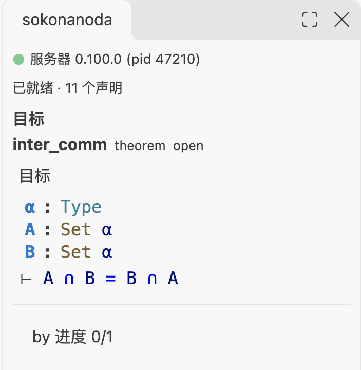

Fill the sorry, save, and the declaration is checked by a complete Lean-4-compatible dependent type checker. The goal panel is the kernel's answer, recomputed as you move.
The same events drive the editor, the CLI's JSON output and the course gate.
